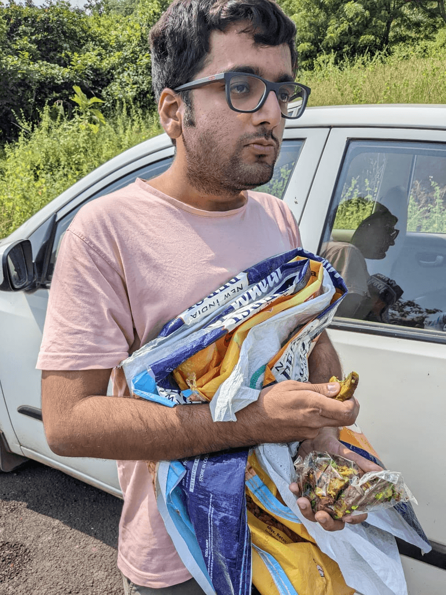
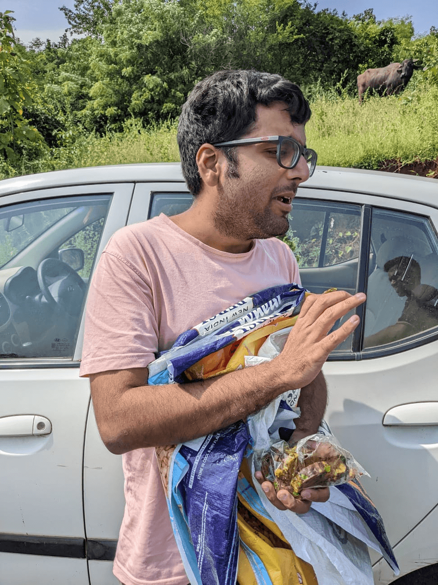
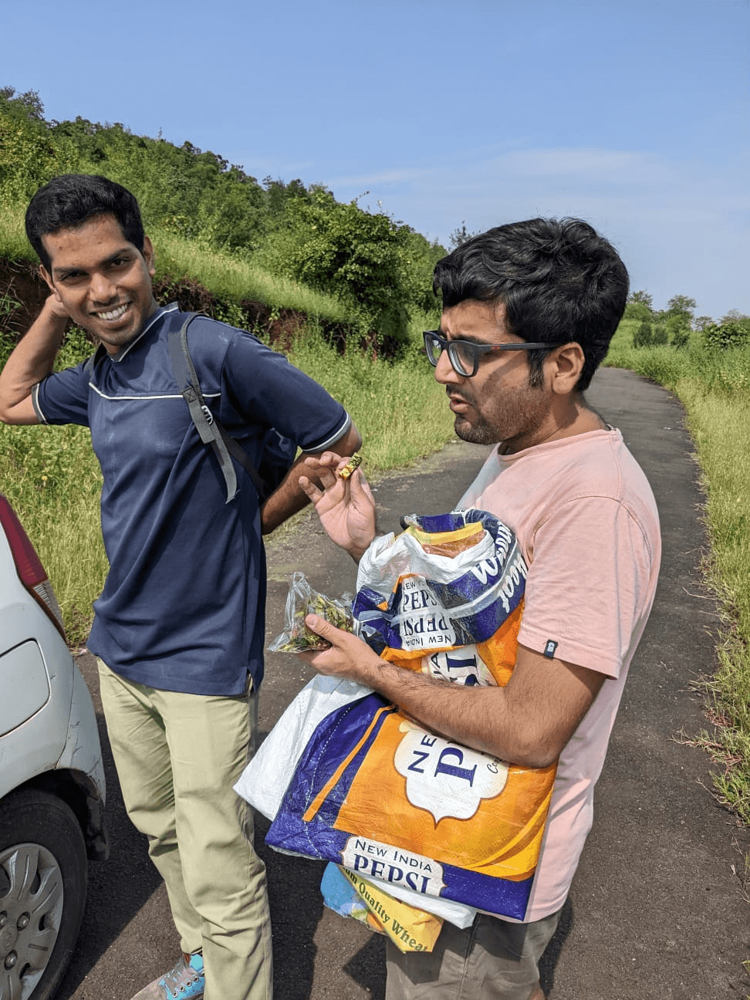
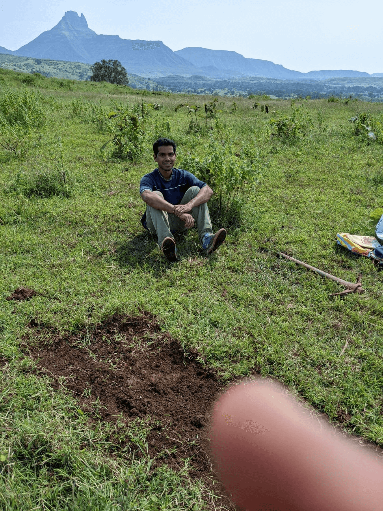
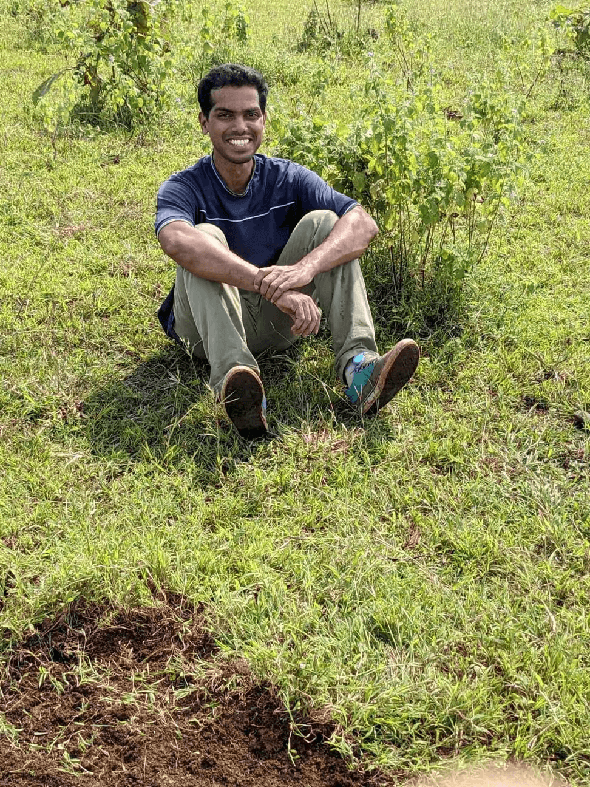

2022-10-19
On Friday, I reached home at 10 PM, after working at Arya’s for a while and then visiting Vihaan’s mother to wish her a belated birthday.
On reaching home, I asked Hitesh if meeting at 10 AM at Ambernath station was fine, so I could sleep and he happily said yes.
Savio and I, yes he’s back, although the reason for his arrival is sad and I now wish he wouldn’t be back, he is here and I’m happy he is - I have my trail engineer back.
In the morning, I realized I forgot my spoon (something I need to have to eat) and I usually have breakfast on the train on my way to the trail to save time. Additionally, if I ate at home, I’d be hungry by the time we’d start building. We then stopped at a bunch of shops to buy spoons. Gonis as well, which we forgot to take from Kashish. Little did I know, finding someone willing to sell something other than a small wooden ice cream spoon, that would turn eating into torture, took longer than buying gonis from MULTIPLE shops, might I add.
Goni means sack. Ambuja cement aur chawal wala.
When we reached the trail,



where we found our tools were stolen, only because of our incompetence. SOMEONE (Hitesh or Satish ) thought it was a safe idea to leave the tools near the trails despite them being stolen at Rayate hitherto.
We walked for a long time to borrow tools from the locals which was tiring. One of the two fawdas (shovels) was made out of bamboo. It was light and solid. It is a pleasure building with that.
We then started building the 1st jump - a 1-bike-length tabletop. We got tired midway due to the morning walk. Only putting the mud on top of the goni-structure was left. Hitesh left to help out his friend plan a surprise, we (not really) missed his moral support. Oh also, at the time of writing this, we recently found out his shoulder has a minor fracture. A month after the crack he went to the doctor. What a chut. We toiled through the rest of the build. I was exhausted enough to set 15 min intervals and 5 min breaks to focus on the act of building and focus due to the deadline an interval gives. Parkinson’s law in action.


During this, there was a lot of Hitesh whining, Uni discussion with Hitesh loving my email ID, reading my CV, and me reading his Essay and Personal statement.
We then discussed again my CV and how it is a 2 pager. He provided valuable feedback (thanks babe). The conversation then turned to expensive rich kid schools and how the curriculum is different there and the kinds of opportunities privilege provides.
I was also\u2026 teased? about my last paragraph in my previous post asking my friends to linger at the doorstep and forget their scarf in my life, and how “bhai aise bolega toh bandi aaraam se pategi’‘. Bhai log, mature thhoda emotionally, bandi ki tension nahi hogi fir. Become formidable and you will have more pussy than you know what to do with.
I was tired enough and now have enough crash experience to know I was not in a state to attempt the jump on a bike I am unfamiliar with. So I did not, we then proceeded to the base of the hill and around the same time when Hitesh got back. Ooh, Hitesh spent 20 mins being indecisive about when to leave for surprise planning. That was entertaining
Hitesh, Savio, Sri, his bike, and I went to Sri’s place. There he showed us his audio engineering projects at Hitesh\u2019s request.
We proceeded to watch VR porn. Turns out most of the stuff is paid. We had 2 90 sec samples. Their experiences have been captured for your vicarious pleasure. Unfortunately, no one recorded my reaction :(
Regardless, it is not as immersive as I thought it would be. This is most likely due to the disconnect of watching what would presumably be my body fucking this chick but feeling nothing, not hip thrusting. But that is a problem that can be extended to all kinds of porn. Overall, meh experience. Also, I have realized I no longer enjoy porn, of any kind. The Hamza and the romantic in me won’t allow me to, even if I did. Hitesh subsequently left.
Then he showed us his blender projects, more song stuff, and video projects. That took a long while. We then played for roughly 15 mins each of a VR game called The Lab for. The Bow and Arrow sub-game was fun. However, I will now restrict myself to a boxing/ping pong game for the experience and won’t continue, for long-term dopamine detox purposes. It fucks with my ability to do difficult things, due to the hedonic treadmill.
We left by 9pm. I write this on the train at 10 (editing on 19th Oct 2022) as I sit in first class coach. Meanwhile, Savio sits in second because he is an imaandaar man.
Kal Sunday ko no ride, mujhe sona hai. We have to thicken the top layer of soil next week, 1.5BL jump, and a pair of berms. I have realized my schoolmates read this as well. For you: berms are banked turns. Riding them correctly enables one to maintain speed in a corner. This is fun, and a skill, which is why we build them.
I feel like I write the best when I’m hungry and tired - no inhibitions.
A lot of struggle, and a lot of work to come in the years ahead. Savio and I spoke about that while walking to Ambernath station.
flying kisses
PS Hitesh hug karle bhai, khaa nahi jaaunga tujhe. Jitna bhi ride cancel karega, tere bina apna rides, apna events same nahi. Bohot pyaar <3